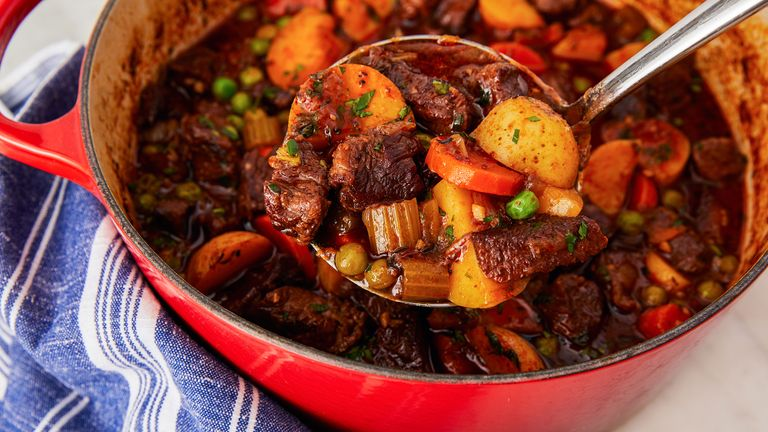

Beef stew recipe

Description
Beef stew is a cold weather essential. Read on to get all the hot deets on this ultra-comforting stew.
Ingredients
- 1 tbsp. vegetable oil
- 2 lb. beef chuck stew meat, cubed into 1" pieces
- 1 tbsp. extra-virgin olive oil
- 1 onion, chopped
- 2 carrots, peeled and cut into rounds
- 2 stalks celery, chopped
- Kosher salt
- Freshly ground black pepper
- 3 cloves garlic, minced
- 1/4 c. tomato paste
- 6 c. low-sodium beef broth
- 1 c. red wine
- 1 tbsp. Worcestershire sauce
- 1 tsp. dried or fresh thyme leaves
- 2 bay leaves
- 1 lb. baby potatoes, halved
- 1 c. frozen peas
- 1/4 c. freshly chopped parsley, for garnish